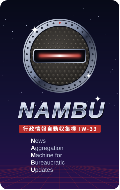

NAMBU 岩手県市町村新着情報
2026年11月20日の更新

最終取得 10:16（日本時間） ・ 新着 130 件
⚠ 北上市 — 取得エラー
最新の取得で、一部または全部の取得元から取得できませんでした。
- https://www.city.kitakami.iwate.jp/cgi-bin/feed.php?siteNew=1: HTTPError: 502 Server Error: Bad Gateway for url: https://www.city.kitakami.iwate.jp/cgi-bin/feed.php?siteNew=1
⚠ 奥州市 — 取得エラー
最新の取得で、一部または全部の取得元から取得できませんでした。
- https://www.city.oshu.iwate.jp/cgi-bin/feed.php?siteNew=1: HTTPError: 502 Server Error: Bad Gateway for url: https://www.city.oshu.iwate.jp/cgi-bin/feed.php?siteNew=1
⚠ 西和賀町 — 取得エラー
最新の取得で、一部または全部の取得元から取得できませんでした。
- https://www.town.nishiwaga.lg.jp/cgi-bin/feed.php?siteNew=1: HTTPError: 502 Server Error: Bad Gateway for url: https://www.town.nishiwaga.lg.jp/cgi-bin/feed.php?siteNew=1
⚠ 宮古市 — 取得エラー
最新の取得で、一部または全部の取得元から取得できませんでした。
- https://www.city.miyako.iwate.jp/cgi-bin/feed.php?siteNew=1: HTTPError: 502 Server Error: Bad Gateway for url: https://www.city.miyako.iwate.jp/cgi-bin/feed.php?siteNew=1
⚠ 陸前高田市 — 取得エラー
最新の取得で、一部または全部の取得元から取得できませんでした。
- https://www.city.rikuzentakata.iwate.jp/cgi-bin/feed.php?siteNew=1: HTTPError: 502 Server Error: Bad Gateway for url: https://www.city.rikuzentakata.iwate.jp/cgi-bin/feed.php?siteNew=1
⚠ 久慈市 — 取得エラー
最新の取得で、一部または全部の取得元から取得できませんでした。
- https://www.city.kuji.lg.jp/cgi-bin/feed.php?siteNew=1: HTTPError: 502 Server Error: Bad Gateway for url: https://www.city.kuji.lg.jp/cgi-bin/feed.php?siteNew=1
⚠ 野田村 — 取得エラー
最新の取得で、一部または全部の取得元から取得できませんでした。
- https://www.vill.noda.iwate.jp/cgi-bin/feed.php?siteNew=1: HTTPError: 502 Server Error: Bad Gateway for url: https://www.vill.noda.iwate.jp/cgi-bin/feed.php?siteNew=1
⚠ 一戸町 — 取得エラー
最新の取得で、一部または全部の取得元から取得できませんでした。
- https://www.town.ichinohe.iwate.jp/cgi-bin/feed.php?siteNew=1: HTTPError: 502 Server Error: Bad Gateway for url: https://www.town.ichinohe.iwate.jp/cgi-bin/feed.php?siteNew=1
盛岡市5件
- 2026年11月19日盛岡市先人記念館 第3回 ワークショップ「まゆ人形を作ろう」
- 2026年11月19日盛岡市先人記念館 第20回 盛岡の古町名展「呉服町かいわい その2」展示解説
- 2026年11月19日もりおか歴史文化館 睦月のお箏演奏会
- 2026年11月19日盛岡市先人記念館 第20回 盛岡の古町名展「呉服町かいわい その2」
- 2026年11月19日盛岡てがみ館 特別展「干支にちなんだ資料展 ―ひつじ―」
八幡平市8件
- 2026年11月20日「八幡平市地域福祉計画策定委員会」の委員を募集します
- 2026年11月19日2027年1月採用「八幡平市移住コーディネーター」を募集します
- 2026年11月18日【岩手ビッグブルズ】ホームゲームに無料ご招待します！
- 2026年11月18日【受付終了】木造住宅の新築、増改築の工事費用に助成します
- 2026年11月16日スポーツ振興くじ助成金を活用し施設整備を行いました
- 2026年11月16日陸上自衛隊岩手山演習場等における11月後半の訓練予定を更新しました
- 2026年11月16日令和8年度八幡平市スキー大会実行委員会主管大会一覧
- 2026年11月13日公の施設の指定管理候補者の選定結果を公表します（令和8年度選定）
滝沢市2件
- 2026年11月20日二十歳のつどいの参加申し込みについて
- 2026年11月19日「滝沢小岩井線」冬季臨時便の運行を開始します
雫石町6件
- 2026年11月19日町内小学校児童を対象に「いのちの授業」が開催されました
- 2026年11月19日ボランティア除雪活動の募集・申請等について
- 2026年10月2日「令和８年８月千葉豪雨災害義援金」のご報告
- 2026年8月19日【網張ビジターセンター】 12月のミニ企画 *** あったかい室内でクラフト体験！
- 2026年8月7日「令和８年熊本地震災害義援金」のご報告
- 2025年12月2日【休暇村岩手網張温泉】 メンテナンス休館のお知らせ
紫波町8件
- 2026年11月20日NEW! 11月13日に「あかちゃんぱーく」を開催しました!
- 2026年11月19日NEW! 休日部活動地域展開モデルクラブ事業について
- 2026年11月19日NEW! 制作『クリスマスカード作り』/子育て応援センターしわっせ
- 2026年11月19日NEW! 紫波町スクールヘルパー[医療的ケア児対応含む](会計年度任用職員)採用試験の実施について
- 2026年11月18日NEW! 11月12日に「にこにこひろば」へ行ってきました!
- 2026年11月18日NEW! 🏀岩手ビッグブルズのホームゲームを観戦しませんか?
- 2026年11月17日NEW! 紫波町職員採用候補者選考試験(令和9年1月採用 任期付職員)結果
- 2026年11月17日NEW! 紫波中央駅前地区緑地の除草剤散布について
矢巾町7件
- 2026年11月19日NEW! 【結果発表】「令和8年度矢巾町俳句大会~故小原啄葉氏生誕の地~」を開催!
- 2026年11月19日NEW! 地域計画について
- 2026年11月17日NEW! 矢巾町指定ごみ袋以外でのごみ出しに関する臨時措置について
- 2026年11月17日NEW! 矢巾町女性会第45回歳末助け合い演芸会を開催します
- 2026年11月17日NEW! 「ゲートキーパー養成講座~大切な人の『小さな変化』に気づくために~」のご案内
- 2026年11月11日マタニティマークを配布します
- 2026年11月1日矢巾町子育てガイドブック・孫育てガイドブックについて
花巻市13件
- 2026年11月19日農業集落排水使用料の賦課漏れについて議員説明会を開催しました
- 2026年11月19日小山田保育園の閉園について議員説明会を開催しました
- 2026年11月19日新花巻図書館整備実施設計について議員説明会を開催しました
- 2026年11月19日使用料・手数料の見直し（案）について議員説明会を開催しました
- 2026年11月19日【東北経済産業局】飲食料品にかかる消費税率の臨時的な引下げに関する制度概要及びレジシステムの改修等に関する支援制度の説明会のご案内
- 2026年11月19日花巻市総合文化財センター 令和8年度 ワークショップ 第2回「組紐ストラップ作り」を開催します（令和8年12月19日開催）
- 2026年11月19日倉沢人形歌舞伎調査委員会
- 2026年11月18日おおはさま映画会《愛妻物語》を開催します（12月13日）
- 2026年11月17日令和9年度採用 花巻市職員採用試験（一般採用試験）第3次試験合格者の発表
- 2026年11月17日【12月5日チケット発売】特選ぎんどろ寄席を開催します
- 2026年11月17日【チケット発売中】Xmas Jazz Night in HANAMAKIを開催します
- 2026年11月17日補助金等の交付実績に関する情報を公表します
- 2026年11月16日花巻二地域居住推進コンソーシアムによる二地域居住・お試し移住を支援する取り組みを行います
一関市36件
- 2026年11月20日特設人権相談
- 2026年11月20日室根子育てひろば（予約制）
- 2026年11月20日いきいき・かみかみ百歳体操
- 2026年11月20日室根図書館おはなし会
- 2026年11月20日ミニ門松づくり教室
- 2026年11月20日健康教室
- 2026年11月20日室根図書館「図書館活用相談会」
- 2026年11月19日議員全員協議会等提出資料
- 2026年11月18日しめ縄作り教室
- 2026年11月18日興田地区バウンドテニス交流大会
- 2026年11月18日ヘルスアップ教室
- 2026年11月18日猿沢地区振興会ワークショップ
- 2026年11月18日マーブルアート教室
- 2026年11月18日「大原水かけ祭り」加勢人装束制作体験
- 2026年11月18日クリスマスイベント
- 2026年11月18日しめ縄づくり教室
- 2026年11月18日第２回渋民ふるさと勉強会
- 2026年11月18日第１回渋民地区軽スポーツ交流大会
- 2026年11月18日しめ縄作り講座
- 2026年11月18日Go！Go！しぶさた
- 2026年11月18日第３回高齢者学級「歌って健康『歌声サロン』」
- 2026年11月18日シニア世代交流の場づくり事業「カラオケ」
- 2026年11月18日オカザリ伝承会
- 2026年11月18日ＤＡＭオンラインコンサート
- 2026年11月18日音楽喫茶「結」
- 2026年11月18日成人講座 リンパ体操教室
- 2026年11月18日曽慶地区卓球大会
- 2026年11月18日第４回摺沢いきいき学園「健康講座」・摺沢福祉協議会「福祉講演会」
- 2026年11月18日駅の映画会
- 2026年11月17日NECプラットフォームズ株式会社一関事業所跡地に関する検討状況について
- 2026年11月17日図書館おはなし会
- 2026年11月17日賢治のおはなし
- 2026年11月17日令和８年11月の指名競争入札予定・結果のお知らせ(本庁)
- 2026年11月17日第4次いちのせき男女共同参画プランの取組状況及びいちのせきジェンダー平等推進プランの事業計画
- 2026年11月2日公民連携の取組について
- 2026年11月2日令和8年度一関市職員採用試験（後期試験（追加募集））の実施について
金ケ崎町3件
- 2026年11月19日広報かねがさき 2026年11月号
- 2026年11月19日令和８年１１月１９日 行政区長配布一覧
- 2026年11月17日令和８年度金ケ崎町地域協働雪対策事業補助金の申請を募集します
平泉町1件
- 2026年11月17日平泉町健康福祉交流館（悠久の湯 平泉温泉）「年末年始・大感謝祭」のお知らせ
大船渡市5件
- 2026年11月20日2027年「吉浜のスネカ」開催情報を更新
- 2026年11月20日シカ防護網の申し込み受付を開始します
- 2026年11月20日「吉浜のスネカ」出発式参加者（親子）募集しています
- 2026年11月20日広報おおふなと令和8年11月号を掲載しました（特集：三陸育ちの至高の味～大船渡で挑むキャビアづくり～）
- 2026年11月18日気仙がんを学ぶ市民公開講座「気仙地域の医療を知る」を開催します
釜石市9件
- 2026年11月20日【学校教育課】かまいし絆会議
- 2026年11月19日【かまいしラグビーNEWS】日本製鉄釜石シーウェイブスが市長を表敬訪問しました！
- 2026年11月19日【図書館】《図書展》「クリスマス図書展」を開催します。
- 2026年11月19日令和8年11月入札結果
- 2026年11月18日【学校教育課】子どもたちの成長を支える家庭と学校のより良い関係づくりに向けて
- 2026年11月18日インフルエンザ・新型コロナウイルス感染拡大！ ひきつづき感染症対策をお願いします
- 2026年11月18日【図書館】「あたらしく入った本（令和８年10月）」のお知らせ
- 2026年11月17日11月は秋のこどもまんなか月間です
- 2015年3月7日成人けんしん（健診・検診）
住田町1件
- 2026年11月19日令和８年分 給与支払報告書の提出について
大槌町1件
- 2026年11月16日令和９年度 給与支払報告書の提出について
山田町2件
- 2026年11月19日【11月20日（土）午前中】役場庁舎の電話工事に伴う電話の不通について
- 2026年11月18日町内一斉ごみ拾い「ごみ0（ゼロ）作戦」のごみの量について
岩泉町4件
- 2026年11月19日ハローワーク週間求人情報(令和８年11月19日発行)
- 2026年11月18日いわて就職マッチングフェアの開催についてご案内
- 2026年11月18日いわて産業人材奨学金返還支援制度のご案内
- 2026年11月17日町有不要物品（車両）の売却に係る一般競争入札について
田野畑村1件
- 2026年11月1日家電４品目の処理方法について
二戸市5件
- 2026年11月19日令和8年11月分二戸市入札・見積・プロポーザル執行状況
- 2026年11月19日【事業発展補助金】令和８年度二戸市事業発展・事業継続支援補助金について（第２弾）
- 2026年11月19日企業版ふるさと納税（地方創生応援税制）のご案内 ～ 二戸市への応援をお願いします ～
- 2026年11月18日社会教育委員会議の開催について
- 2026年11月18日令和6年12月2日からコンビニ交付サービスが始まっています！
軽米町8件
- 2026年11月19日板橋米田岡堀線道路改良工事(閲覧期間11月19日~11月26日)
- 2026年11月19日町道靄岳開拓線道路舗装工事(閲覧期間11月19日~11月26日)
- 2026年11月19日町道筋内線道路舗装工事(閲覧期間11月19日~11月26日)
- 2026年11月19日町道蛇口蜂ヶ塚線道路改良工事(閲覧期間11月19日~11月26日)
- 2026年11月18日クリスマスツリーランタン教室(親子で学ぶ環境教室)
- 2026年11月17日競争入札参加資格審査申請手続きの方法が変わります
- 2026年11月17日軽米児童クラブ 冬季休暇中の申し込みについて
- 2026年11月16日「いわて観光・地域魅力発掘人材育成講座」特別企画開催のご案内
洋野町5件
- 2026年11月19日【お知らせ】洋野町立図書館だよりVol59の発行と12月の図書館カレンダーについて
- 2026年11月18日洋野町議会基本条例（案）に対するパブリックコメントの結果について
- 2026年11月17日【重要なおしらせ】冬季間の図書館の開館時間短縮について
- 2026年9月2日洋野町議会基本条例（案）に対するパブリックコメントの実施について【終了しました】
- 2022年5月23日洋野町快適住環境応援事業について【申請受付を終了しました】
選択中の自治体の記事はありません